Optional Task 7d - Deleting Cloud onRamp for IaaS and Verification
As per previous tasks, Cloud OnRamp for IaaS created public cloud resources in AWS such as transit VPC; two (2) vEdge Cloud devices, vEdge1 and vEdge2; virtual private gateway, vpn connections between host and transit VPCs etc. This Task will delete these resources
Pre-requisite 1: SDWAN controllers must be fully operational. If those are not installed (or operational) then please complete the previous Tasks first.
Pre-requisite 2: Pre-configured Cloud OnRamp for IaaS must be fully operational. If it is not operational then please complete the previous Tasks first.
You configure and manage Cloud OnRamp for IaaS through the vManage. A configuration wizard in the vManage automates the bring-up the transit to your public cloud account and automates the connections between public-cloud and branches in SDWAN overlay network. We will use same configuration wizard to delete it.
Step 1: Deleting Cloud onRamp for IaaS and Verification
In this step you will unmap host transit VPC and then elete public cloud resources in AWS.
- Log on the vManage from a web browser (if not already open) and use credentials of
adminandadmin:
https://198.18.1.10
| Note: |
|---|
If admin/admin credentials do not work then you may try using cisco/cisco or cisco1/cisco1 |
- On the vManage GUI, navigate to Configuration > Cloud onRamp for IaaS and click green up arrow under Mapped Host VPCs (Total: 1). This will unmap host VPC.
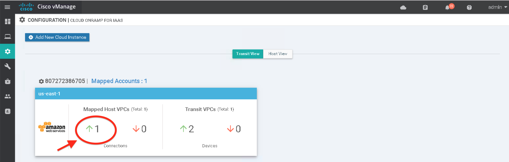
- Then checkmark host VPC SDWAN-hostVPC#
#=1,2,3,...,16and click Un-Map VPCs.
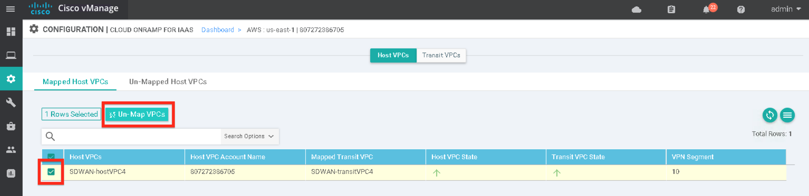
- Click OK.
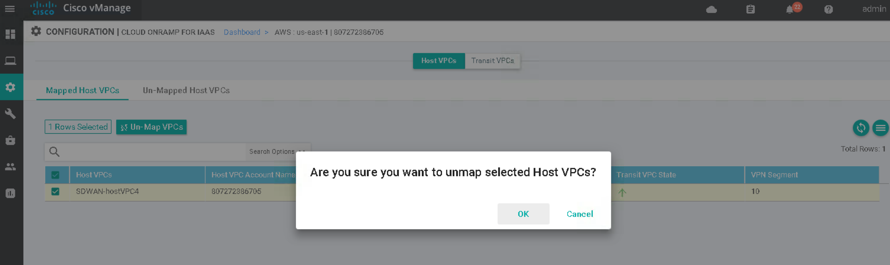
- Confirm unmapping host VPC successfully completed.
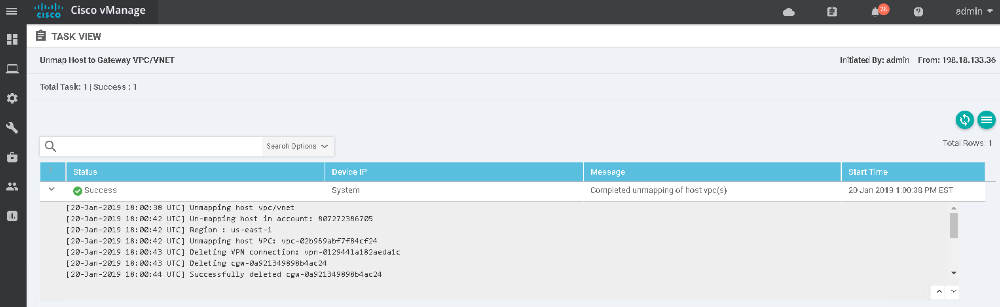
| Note: |
|---|
| Unmapping host VPC deletes all VPN connections to the VPN gateway in the host VPC, and then deletes the VPN gateway. When you make additional VPN connections to a mapped host VPC, they will be terminated as part of the unmapping process. |
- Navigate back to Configuration > Cloud onRamp for IaaS and click green up arrow under Transit VPCs (Total:1). This will delete transit VPC.
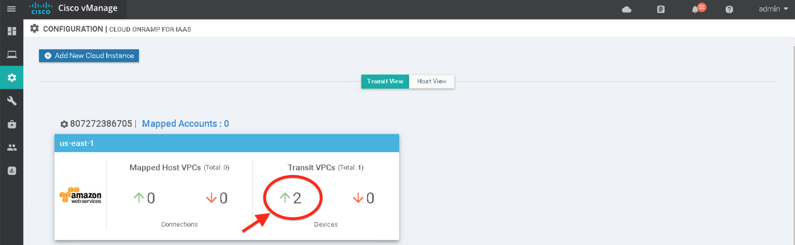
- Click Transit VPCs
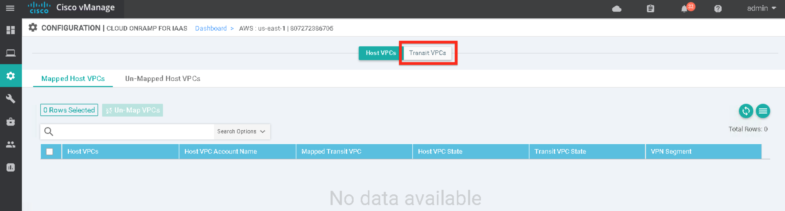
- Click the Trash icon to the left of the row in order to delete the transit VPC.
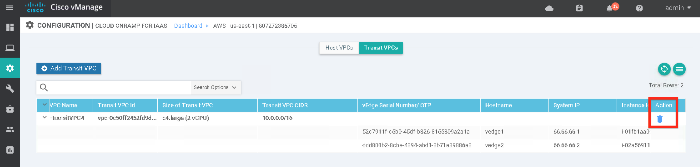
- Click OK
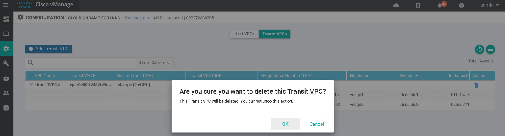
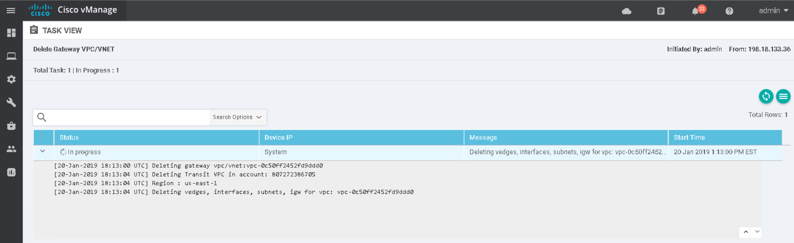
- Status can be followed through vManage and AWS Management Console. In order to confirm the changes on AWS Management Console; log on to AWS from a web browser (if not already open) and click on Sign In to the Console
https://aws.amazon.com/console
Use credentials of the following:
- Account ID =
807272386705 - IAM user name =
CLEUR_User##=1,2,3,...,16 - Password =
CLEUR19
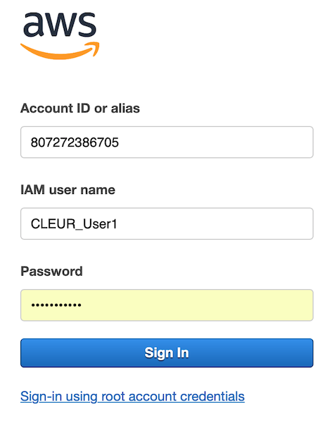
Once connected to AWS Management Console, verify assigned region is selected on the navigation bar for your given number.
Select region list from up-right corner of the console as shown below and select your respective region. As an example, CLEUR_User1 is to select US East (Ohio) region.
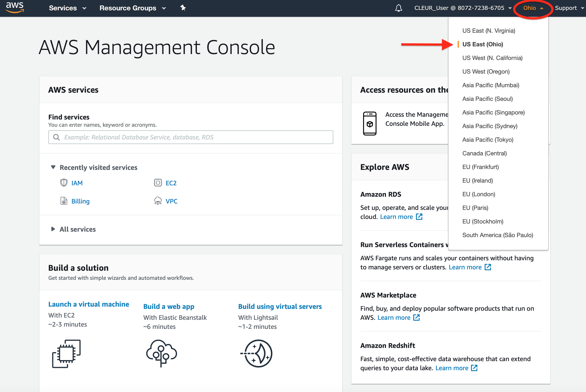
Then click on Services on the navigation pane and select EC2 from Compute menu.
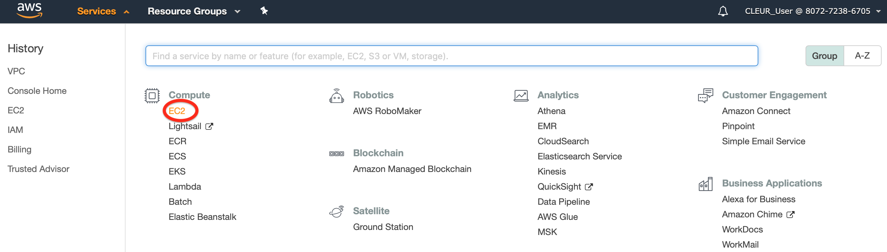
Select Instances
You will see vEdge Cloud instances has started to be terminated.
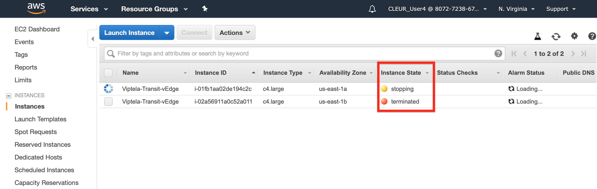
On vManage, confirm that transit VPC, vEdges, interfaces, subnets and internet gateway have been successfully deleted.
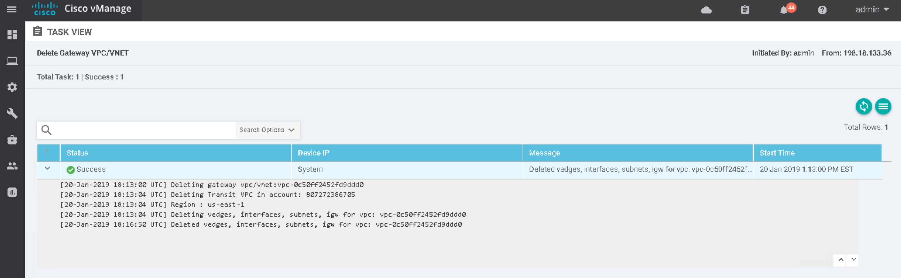
In order to confirm vEdges has been terminated successfully, go back to AWS Management Console and click Refresh the page.
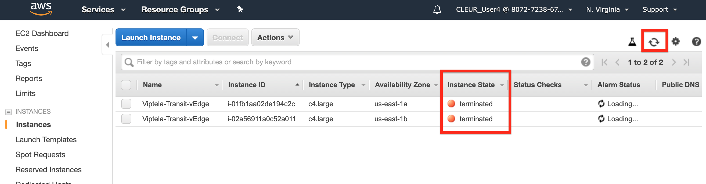
Then, confirm transit VPC has been deleted by clicking on Services on the navigation pane and selecting VPC from Network & Content Delivery menu.
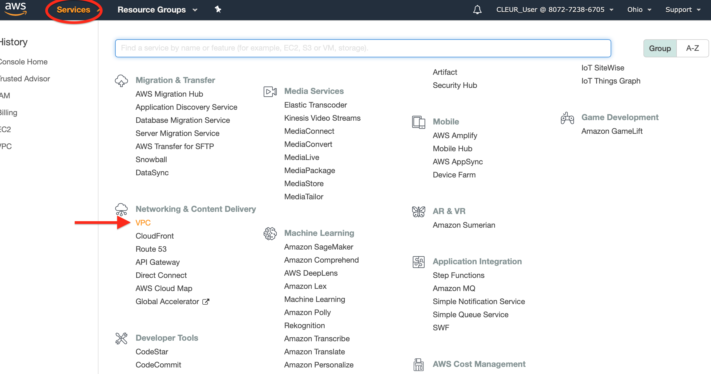
Click on Your VPCs on the VPC navigation pane
Confirm SDWAN-transitVPC# has been successfully deleted.
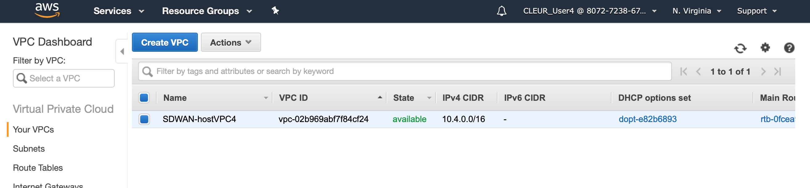
This concludes the process to delete Cloud onRamp for Iaas and execute verification.